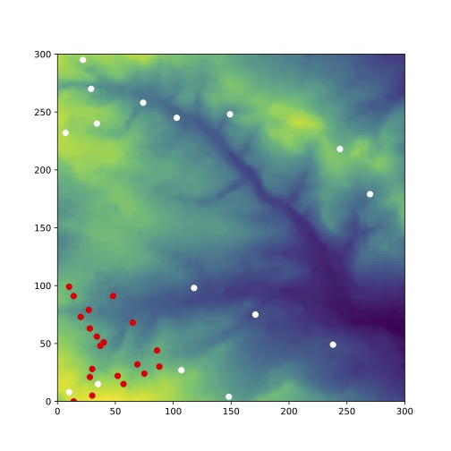

Hi! I'm Rory, a MSc River Basin Dynamics and Management student studying at the University of Leeds. I have been in Leeds for 5 years, having studied BSc Geography (Industrial) here and previously I studied Biology, Geography and Computing for A Level where I learnt VB 6 and VB.net, which has beeen useful for macros. This is my portfolio for my work including my 2 Python assignments.
Student ID: 201125987 Email: gy17rawg@leeds.ac.uk
There is a user interface created with TKinter, an imported environment (environment.csv) which is displayed using matplotlib and then animated showing the agents (a simple way to imagine them is sheep) moving and eating/nibbling their way across the environment. Reproduction is possible by agents. The final environment after the number of chosen interations is then outputted to environment.csv and a pdf saved of the final plot.
Example of the program's output:
This is my future assignment calculating ice berg mass and if theyre are (hypothetically) tugable out of a ship's way